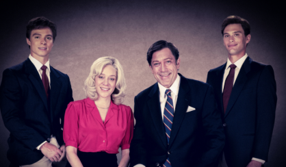

Formato da Série
Cada temporada foca em um caso real de crime, com ênfase no ponto de vista psicológico e social.

“Monstros” é uma antologia dramática da Netflix criada por Ryan Murphy e Ian Brennan. Cada temporada retrata a vida e os crimes de assassinos notórios dos Estados Unidos, explorando suas origens, motivações e o impacto devastador de seus atos na sociedade.
A primeira temporada, Monstro: A História de Jeffrey Dahmer, acompanha o famoso serial killer de Milwaukee. Já a segunda, Monstros: A História dos Irmãos Menendez, explora o chocante assassinato dos pais pelos irmãos Lyle e Erik Menendez.
Cada temporada foca em um caso real de crime, com ênfase no ponto de vista psicológico e social.
Desenvolvida por Ryan Murphy e Ian Brennan, criadores de American Horror Story.
A série gerou debates sobre a retratação de crimes reais, sendo aclamada por sua produção e atuações intensas.
